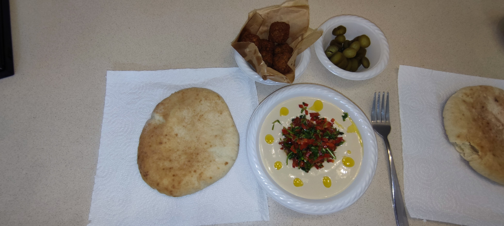

Itzik's hummus

My special hummus dish
Middle Eastern Italian, a dish you will make again and again
ingredients
- 400 grams of cooked hummus
- A cup of tahini
- Half a teaspoon of cumin
- 3 cloves of garlic
- Half a teaspoon of salt
- 5 tablespoons of oil
- Half a glass of warm water
Steps
- Grind the chickpeas
- Pour the cup of tahini
- mix
- Add the rest of the ingredients
- Grind well for 10 minutes with a minute rest every 2 minutes
Tip: serve warm alongside fresh pita